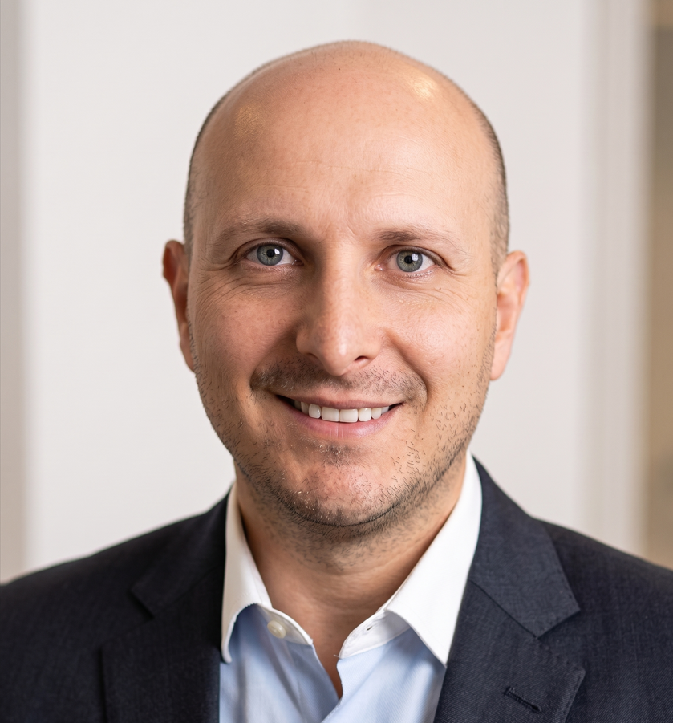

Bridging high-stakes financial engineering with scalable, production-ready AI. I lead the "Production Premium" — turning models into high-availability systems that move real capital.

A leader in scaling high-availability APIs with Python, FastAPI, Docker & Snowflake — translating financial risk into production-ready AI.
Migrated legacy R credit-risk models to production Python on FastAPI, enabling real-time, API-based scoring with 90% test coverage.
Catalyzed AI adoption at CESDE — teaching RAG and Prompt Engineering workflows that drove 25% productivity gains.
Deployed PyTorch & Scikit-learn demand-prediction models (+15% accuracy) and surfaced $50K+ in tax irregularities via PySpark on AWS.
Built RAG chatbots and research agents with LangChain, OpenAI/Claude and vector DBs — automating 100% of weekly reporting.
Designing reliable LLM systems — from retrieval to guardrails — for high-stakes financial use.
Shipping high-availability systems with reproducible pipelines and infrastructure as code.
Quantitative risk and forecasting grounded in formal financial engineering training.
Turning non-technical organizations into AI-fluent teams through hands-on enablement.
An end-to-end investment-intelligence platform: four ML modules — portfolio optimization, price forecasting, credit-risk scoring and market sentiment — unified by an LLM assistant, with full MLOps + LLMOps observability.
View repositoryCommercial real-estate rent forecasting and tenant default-risk scoring — paired with an agentic lease-abstraction pipeline that reads and structures lease documents.
View repositoryA full-stack personal finance tracker — Next.js 14, FastAPI and PostgreSQL — containerized with Docker and deployed to production on Vercel + Railway.
View repositoryA generator for privacy-safe, ML-ready synthetic datasets — producing realistic tabular data for model training and testing where production data can't be shared.
View repositoryA lightweight personal-finance toolkit for budgeting, expense tracking and money management — making everyday financial decisions simpler and more transparent.
View repositoryML modeling, Value-at-Risk (VaR) modeling, and stochastic risk analysis.
Tax-compliance algorithms, automated regulatory reporting, and fiscal data integrity.
Five-year quantitative degree — the foundation bridging finance and engineering.
If you're building the next generation of financial architectures — and need someone who can take models from notebook to production — I'd love to connect. Available for senior roles, contract, and advisory.